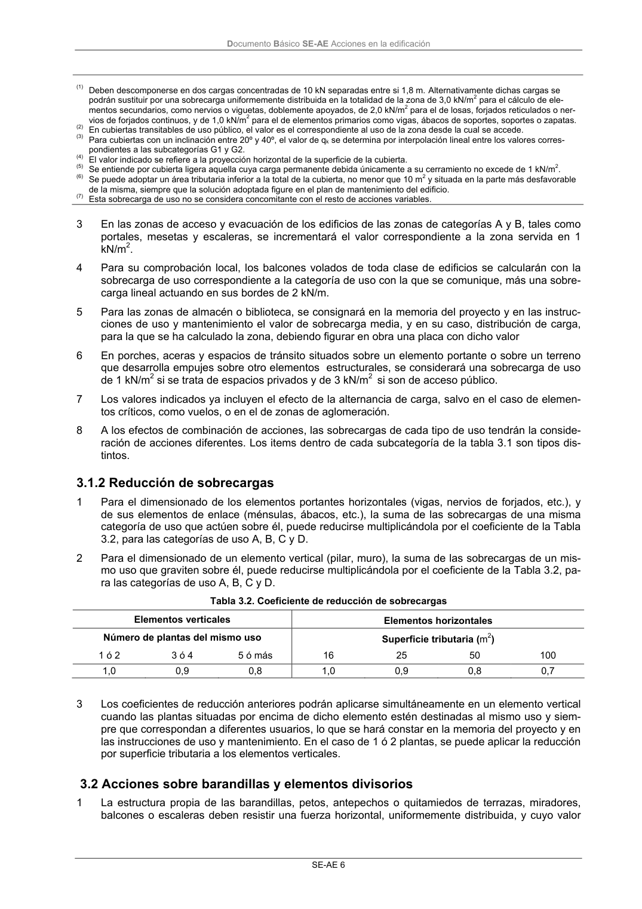

DB-SE-AE · 3.1.2 Reducción de sobrecargas · 3.2 Acciones sobre barandillas y elementos divisorios · versión 2009-04
SHA256: 26116e5088955f0c6963a6187270cad282e1e7bf5a53a90f695c8fa50b4e4487 · página física 10 de 46 · métodos de encabezado
solo si están cotejados.
Formatos: Markdown · JSON de bloques · PDF p. 10 · imagen PNG
Documento Básico SE-AE Acciones en la edificación SE-AE 6 (1) Deben descomponerse en dos cargas concentradas de 10 kN separadas entre si 1,8 m. Alternativamente dichas cargas se podrán sustituir por una sobrecarga uniformemente distribuida en la totalidad de la zona de 3,0 kN/m 2 para el cálculo de ele- mentos secundarios, como nervios o viguetas, doblemente apoyados, de 2,0 kN/m 2 para el de losas, forjados reticulados o ner- vios de forjados continuos, y de 1,0 kN/m 2 para el de elementos primarios como vigas, ábacos de soportes, soportes o zapatas. (2) En cubiertas transitables de uso público, el valor es el correspondiente al uso de la zona desde la cual se accede. (3) Para cubiertas con un inclinación entre 20º y 40º, el valor de qk se determina por interpolación lineal entre los valores corres- pondientes a las subcategorías G1 y G2. (4) El valor indicado se refiere a la proyección horizontal de la superficie de la cubierta. (5) Se entiende por cubierta ligera aquella cuya carga permanente debida únicamente a su cerramiento no excede de 1 kN/m 2. (6) Se puede adoptar un área tributaria inferior a la total de la cubierta, no menor que 10 m 2 y situada en la parte más desfavorable de la misma, siempre que la solución adoptada figure en el plan de mantenimiento del edificio. (7) Esta sobrecarga de uso no se considera concomitante con el resto de acciones variables. 3 En las zonas de acceso y evacuación de los edificios de las zonas de categorías A y B, tales como portales, mesetas y escaleras, se incrementará el valor correspondiente a la zona servida en 1 kN/m2. 4 Para su comprobación local, los balcones volados de toda clase de edificios se calcularán con la sobrecarga de uso correspondiente a la categoría de uso con la que se comunique, más una sobre- carga lineal actuando en sus bordes de 2 kN/m. 5 Para las zonas de almacén o biblioteca, se consignará en la memoria del proyecto y en las instruc- ciones de uso y mantenimiento el valor de sobrecarga media, y en su caso, distribución de carga, para la que se ha calculado la zona, debiendo figurar en obra una placa con dicho valor 6 En porches, aceras y espacios de tránsito situados sobre un elemento portante o sobre un terreno que desarrolla empujes sobre otro elementos estructurales, se considerará una sobrecarga de uso de 1 kN/m2 si se trata de espacios privados y de 3 kN/m2 si son de acceso público. 7 Los valores indicados ya incluyen el efecto de la alternancia de carga, salvo en el caso de elemen- tos críticos, como vuelos, o en el de zonas de aglomeración. 8 A los efectos de combinación de acciones, las sobrecargas de cada tipo de uso tendrán la conside- ración de acciones diferentes. Los items dentro de cada subcategoría de la tabla 3.1 son tipos dis- tintos. 3.1.2 Reducción de sobrecargas 1 Para el dimensionado de los elementos portantes horizontales (vigas, nervios de forjados, etc.), y de sus elementos de enlace (ménsulas, ábacos, etc.), la suma de las sobrecargas de una misma categoría de uso que actúen sobre él, puede reducirse multiplicándola por el coeficiente de la Tabla 3.2, para las categorías de uso A, B, C y D. 2 Para el dimensionado de un elemento vertical (pilar, muro), la suma de las sobrecargas de un mis- mo uso que graviten sobre él, puede reducirse multiplicándola por el coeficiente de la Tabla 3.2, pa- ra las categorías de uso A, B, C y D. Tabla 3.2. Coeficiente de reducción de sobrecargas Elementos verticales Elementos horizontales Número de plantas del mismo uso Superficie tributaria (m2) 1 ó 2 3 ó 4 5 ó más 16 25 50 100 1,0 0,9 0,8 1,0 0,9 0,8 0,7 3 Los coeficientes de reducción anteriores podrán aplicarse simultáneamente en un elemento vertical cuando las plantas situadas por encima de dicho elemento estén destinadas al mismo uso y siem- pre que correspondan a diferentes usuarios, lo que se hará constar en la memoria del proyecto y en las instrucciones de uso y mantenimiento. En el caso de 1 ó 2 plantas, se puede aplicar la reducción por superficie tributaria a los elementos verticales. 3.2 Acciones sobre barandillas y elementos divisorios 1 La estructura propia de las barandillas, petos, antepechos o quitamiedos de terrazas, miradores, balcones o escaleras deben resistir una fuerza horizontal, uniformemente distribuida, y cuyo valor
